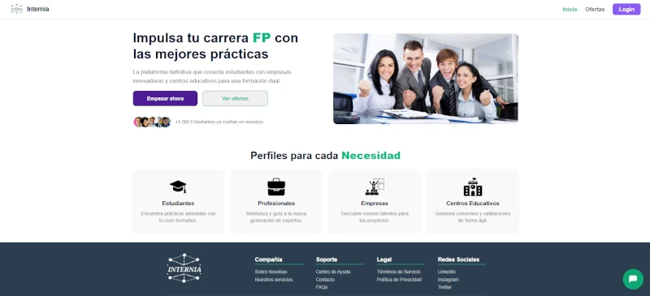

Internia
HTML · CSS · JS · NODE · VUE · POSTGRE SQL · SUPABASE · VERCEL
Internia es una plataforma que centraliza la gestión de prácticas profesionales, facilitando la conexión entre estudiantes de Formación Profesional y centros educativos. Permite publicar, administrar y dar seguimiento a ofertas de prácticas de forma más eficiente y transparente.
 Scarlett Toala
Scarlett Toala